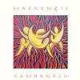

Celtic Lyrics Corner > Artists & Groups > Mackenzie > Camhanach > Waulking Song Set
|  | Waulking Song Set |
| Credits : | Traditional |
|
a) Togaibh Fonn An Drasda
b) Beir Soiridh, Soiridh Bhuam c) Fa Rithill O Ho |
|
| Appears On : | Camhanach |
| Language : | Gàidhlig (Scottish Gaelic) |
| Lyrics : | English Translation : |
| Togaibh fonn an dràsda | Sing together now |
| 'S na ho il o-ho hu ho il o | 'S na ho il o-ho hu ho il o |
| Mhàiri riut a tha mi | I'm talking to you, Mary |
| 'S na hì - i - lì - i liu o-ho | 'S na hì - i - lì - i liu o-ho |
| Ho il o-ho hu ho il o | Ho il o-ho hu ho il o |
| Co a nis do ghràdh-sa? | Who now is your love? |
| 'S na ho il o-ho hu ho il o | 'S na ho il o-ho hu ho il o |
| 'S aithne dhomh na's àill' leat | I know who you like |
| 'S na hì - i - lì - i liu o-ho | 'S na hì - i - lì - i liu o-ho |
| Ho il o-ho hu ho il o | Ho il o-ho hu ho il o |
| Buachaille nan àrd bheann | The shepherd of the high mountains |
| 'S na ho il o-ho hu ho il o | 'S na ho il o-ho hu ho il o |
| Le treud de chaoraich bhàna | With a flock of white-faced sheep |
| 'S na hì - i - lì - i liu o-ho | 'S na hì - i - lì - i liu o-ho |
| Ho il o-ho hu ho il o | Ho il o-ho hu ho il o |
| Crodh-laoigh aige air àirigh | Cattle with calves on the shieling |
| 'S na ho il o-ho hu ho il o | 'S na ho il o-ho hu ho il o |
| Air Tom an Fhianaich àluinn | On the hillock of the beautiful moor-grass |
| 'S na hì - i - lì - i liu o-ho | 'S na hì - i - lì - i liu o-ho |
| Ho il o-ho hu ho il o | Ho il o-ho hu ho il o |
| Bidh ìm is gruth is bàrr ann | There will be butter, crowdie and cream |
| 'S na ho il o-ho hu ho il o | 'S na ho il o-ho hu ho il o |
| Is mulchag mhor de chàise | And a big round of cheese |
| 'S na hì - i - lì - i liu o-ho | 'S na hì - i - lì - i liu o-ho |
| Ho il o-ho hu ho il o | Ho il o-ho hu ho il o |
| Cha bhi dith buntàt' ort | You won't have a scarcity of potatoes |
| 'S na ho il o-ho hu ho il o | 'S na ho il o-ho hu ho il o |
| Na maorach as an tràigh ort | Or shellfish from the shore |
| 'S na hì - i - lì - i liu o-ho | 'S na hì - i - lì - i liu o-ho |
| Ho il o-ho hu ho il o | Ho il o-ho hu ho il o |
| Beir soiridh soiridh bhaum na e ho hu o-ho | Take my greetings na e ho hu o-ho |
| Gu srath m'eòlais na hì rì ri u o | To the strath I know so well na hi ri ri u o |
| O hì o 's a bho ro o e ho hì o-ho | O hi o 's a bho ro o e ho hi o-ho |
| Chon an Leitir Bheag na e ho hu o-ho | To the Leitir Bheag na e ho hu o-ho |
| Bharraich bhòidhich na hì rì ri u o | Beautiful and high-topped na hì rì ri u o |
| O hì o 's a bho ro o e ho hì o-ho | O hi o 's a bho ro o e ho hi o-ho |
| Fàsaidh fochann ann na e ho hu o-ho | Corn, oats and barley na e ho hu o-ho |
| Coirce 's eòrna na hì rì ri u o | Will grow there na hì rì ri u o |
| O hì o 's a bho ro o e ho hì o-ho | O hi o 's a bho ro o e ho hi o-ho |
| Fàsaidh peasair ann na e ho hu o-ho | Pulses and peas na e ho hu o-ho |
| Fàsaidh pònair na hì rì ri u o | Will grow there na hì rì ri u o |
| O hì o 's a bho ro o e ho hì o-ho | O hi o 's a bho ro o e ho hi o-ho |
| 'S bìnn guth cuthaig ann na e ho hu o-ho | The bonnie voice of the cuckoo na e ho hu o-ho |
| 'S bìnn smeòraich na hì rì ri u o | And thrush is there na hì rì ri u o |
| O hì o 's a bho ro o e ho hì o-ho | O hi o 's a bho ro o e ho hi o-ho |
| 'S bìnn guth a' bhuachaill na e ho hu o-ho | And the bonnie voice of the herdsboy na e ho hu o-ho |
| Cualach bhò ann na hì rì ri u o | Tending the cattle is heard there na hì rì ri u o |
| O hì o 's a bho ro o e ho hì o-ho | O hi o 's a bho ro o e ho hi o-ho |
| 'S bìnn guth banchaig na e ho hu o-ho | As is the bonnie voice of the dairymaid na e ho hu o-ho |
| 'S meanbh-chrodh òg roimphe na hì rì ri u o | Tending the young cattle na hì rì ri u o |
| O hì o 's a bho ro o e ho hì o-ho | O hi o 's a bho ro o e ho hi o-ho |
| Sèist : | Chorus (after each verse) : |
| Fà rithill o ho | Fa rithill o ho |
| Ho roho hao leo | Ho roho hao leo |
| Fà rithill o ho | Fa rithill o ho |
| 'S daor a cheannaich mi 'phòg | Dearly have I paid for the kiss |
| A fhuair mi on òg | I got from the young man |
| Ann a' sabhal an fheòir | In a hay-barn |
| Bidh e'm chuimhne rim' bheò | I will remember it forever |
| Gus an teid mi fon fhòd | Until I go under the turf |
| An ciste chumhang nam bòrd | In a narrow coffin of planks |
| Air a dubhachadh le sròl | Covered with black satin |
| 'S air a teannachadh le òrd | And fastened down with a hammer |
| (Sèist...) | (Chorus...) |